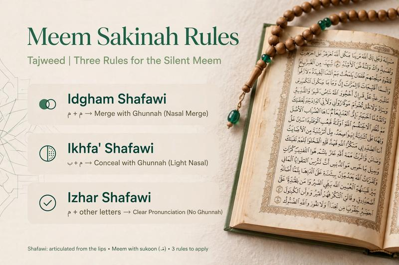

Meem Sakinah Rules in Tajweed

Meem Sakinah is an important Tajweed topic because the pronunciation of the letter Meem changes depending on the Arabic letter that comes after it. Understanding these rules helps Quran students recite with greater accuracy and apply the correct pronunciation during connected reading.
There are three main rules of Meem Sakinah: Ikhfa Shafawi, Idgham Shafawi and Izhar Shafawi. The correct rule is determined by the letter that follows the Meem Sakinah.
📖 Practice Meem Sakinah with a Teacher
Personalized Quran lessons can help you recognize Meem Sakinah rules and correct your pronunciation while reading.
Book a Free Quran & Tajweed Trial →What Is Meem Sakinah?
Meem Sakinah is the Arabic letter Meem (م) with a sukoon. It has no vowel movement and can appear in different positions within Quranic words or between connected words.
When Meem Sakinah is followed by another Arabic letter, the following letter determines which of the three Meem Sakinah rules should be applied.
The Three Rules of Meem Sakinah
The three rules are:
- Ikhfa Shafawi — concealment of the Meem before Ba.
- Idgham Shafawi — merging one Meem into another Meem.
- Izhar Shafawi — clear pronunciation of Meem before all other letters.
1. Ikhfa Shafawi
Ikhfa Shafawi occurs when Meem Sakinah is followed by the letter Ba (ب). The Meem sound is partially concealed while maintaining Ghunnah.
The only letter associated with Ikhfa Shafawi is:
ب
The lips are brought close together for the Meem sound, but the pronunciation is not made as a fully clear Meem. The reader maintains the appropriate nasal sound before moving to Ba.
This rule is called Shafawi because it is related to the lips, which are involved in producing the Meem and Ba sounds.
2. Idgham Shafawi
Idgham Shafawi occurs when Meem Sakinah is followed by another Meem (م). The first Meem merges into the second Meem and the resulting sound is accompanied by Ghunnah.
The letter for Idgham Shafawi is:
م
When reading this rule, the two Meem sounds are not pronounced separately. They are merged into one emphasized Meem sound with Ghunnah.
3. Izhar Shafawi
Izhar Shafawi occurs when Meem Sakinah is followed by any Arabic letter other than Ba (ب) and Meem (م).
In this case, the Meem is pronounced clearly. The reader should take care not to hide the Meem or merge it into the following letter.
Because Izhar Shafawi applies to most of the Arabic letters, students encounter it frequently during Quran recitation.
Meem Sakinah Rules at a Glance
| Rule | Following Letter | How to Read It |
|---|---|---|
| Ikhfa Shafawi | ب | Partially concealed Meem with Ghunnah |
| Idgham Shafawi | م | Merged Meem with Ghunnah |
| Izhar Shafawi | All other letters | Clear Meem pronunciation |
How to Identify Meem Sakinah Rules
A simple way to identify the correct rule is to find a Meem with sukoon and then look at the next letter.
- Find the Meem Sakinah.
- Look at the letter immediately following it.
- If the next letter is Ba, apply Ikhfa Shafawi.
- If the next letter is Meem, apply Idgham Shafawi.
- If the next letter is any other Arabic letter, apply Izhar Shafawi.
With repeated practice, students can learn to recognize these three patterns quickly while reading the Quran.
Why Is Meem Sakinah Important in Tajweed?
Correct Meem pronunciation is important because the letter is produced using the lips and has a distinctive nasal quality when certain Tajweed rules apply. A small difference in pronunciation can affect the quality and accuracy of Quran recitation.
Studying Meem Sakinah also helps students understand the broader relationship between Arabic letters, articulation points and Tajweed rules.
Meem Sakinah and Noon Sakinah: What Is the Difference?
Noon Sakinah and Meem Sakinah are both important Tajweed topics, but they have different rule groups.
Noon Sakinah and Tanween have four main rules: Izhar, Idgham, Iqlab and Ikhfa. Meem Sakinah has three: Ikhfa Shafawi, Idgham Shafawi and Izhar Shafawi.
If you are studying Noon Sakinah and Tanween, start with our complete Noon Sakinah and Tanween Rules guide .
Related Tajweed Lessons
📖 Continue Learning Tajweed
- Noon Sakinah & Tanween Rules
- Izhar Rule in Tajweed
- Idgham Rule in Tajweed
- Iqlab Rule in Tajweed
- Ikhfa Rule in Tajweed
- Rules of Ra: Tafkhim and Tarqiq
- What Is Ghunnah in Tajweed?
Learn Quran and Tajweed Online
Learning Tajweed with a qualified teacher can make it easier to identify pronunciation rules and correct mistakes while reading. One-to-one online lessons allow the teacher to listen carefully to the student's recitation and provide individual guidance.
Al Shimaa Quran Academy offers online Quran and Tajweed lessons for children and adults, including beginners. Students can start with a free trial to discuss their level, goals and preferred schedule.
📖 Start Learning Quran & Tajweed
Practice Tajweed from home with personalized online Quran lessons.
Book Your Free Trial →